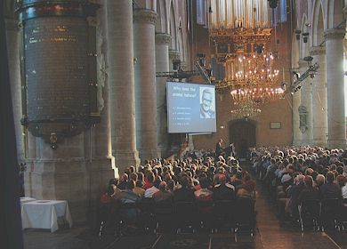
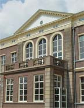
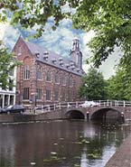
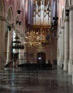
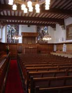

Pieterskerk
Als locatie is gekozen voor de Pieterskerk in Leiden. Dit prachtige historische gebouw biedt ruimte aan ruim 800 deelnemers en vormt op dit moment het decor voor onder andere concerten, congressen, feesten, beurzen, tentoonstellingen en sinds kort zelfs de uitreiking van het eredoctoraat aan konining Beatrix. Na 11 mei heeft de Pieterskerk een nieuw evenement wat zij aan haar lijst van prestigieuze evenementen kan toevoegen: een leuk en vooral leerzaam symposium over digital entertainment.
Voor de parallele sessies maken we gebruik van de vele oude (en nieuwe) gebouwen in de nabije omtrek. Voorbeelden hiervan zijn het academiegebouw en het pas gerenoveerde Kamerlingh Onnes Gebouw.
Een informatica symposium in een kerk zal een bijna surrealistisch beeld scheppen en bij deelnemers ongetwijfeld herinneringen achterlaten van een onvergetelijke happening.


